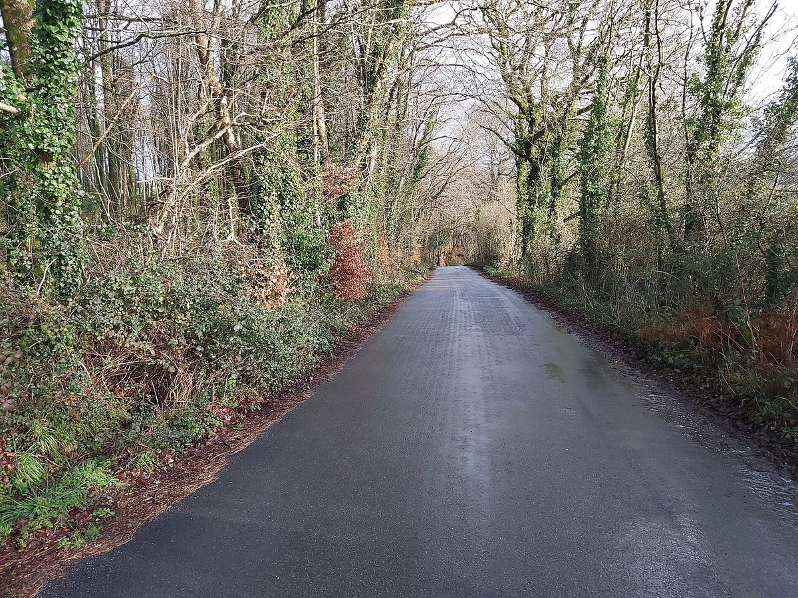

所在地
滋賀県草津市渋川1丁目5-20
電話する 077-563-8738
掲載写真はフリー素材のイメージです。店舗の実際の様子ではなく、他地域で撮影されたもの・撮影地が不明なものを含みます。
写真は店舗周辺の様子ではありません。
お店の情報
| 所在地 | 滋賀県草津市渋川1丁目5-20 |
|---|---|
| 電話 | 077-563-8738 |
| 営業時間 | 準備中(お問い合わせください) |
| 定休日 | 準備中(お問い合わせください) |
| 駐車場 | 準備中(お問い合わせください) |
| 最寄り駅・アクセス方法 | 準備中(お問い合わせください) |